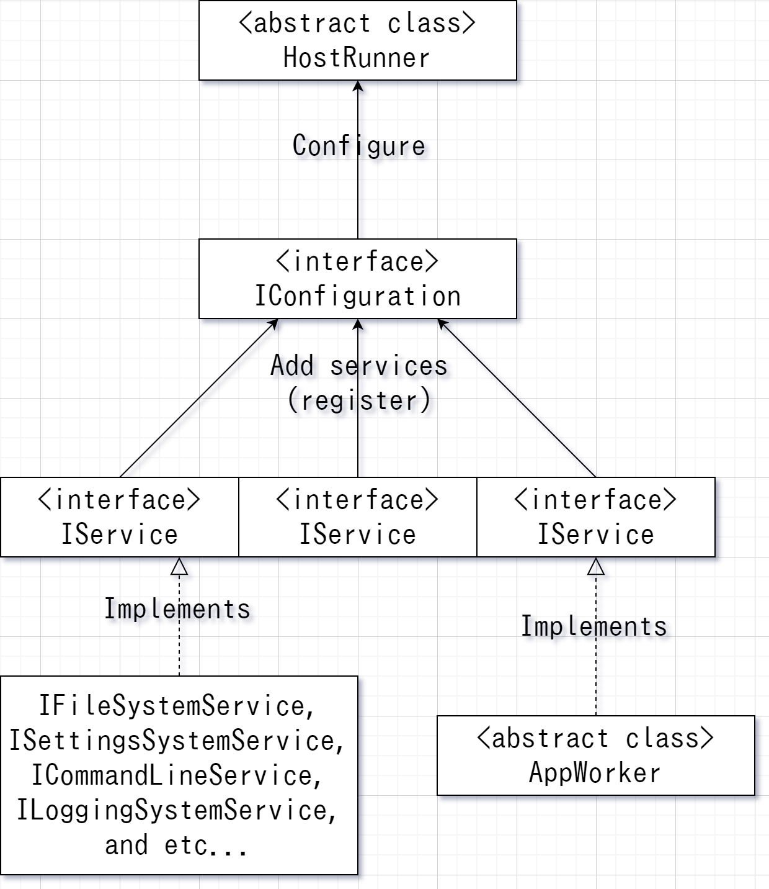

ExapisSOP 設計思想 > 概念
Copyright (C) 2020 Takym.
実行環境とサービス
実行環境とはHostRunnerクラスとその派生クラスのインスタンスの事で、 アプリケーション全体と登録されたサービスを管理し実行します。 一つのアプリケーション内に一つのみ実行環境を作成する事ができます。 サービスとはIServiceインターフェースを実装したクラスの事です。 サービスは様々な種類があり、プログラムに機能を提供します。  上記の図の様にサービスを構成設定(IConfiguration)に登録する事で実行環境内で実行する事ができます。 下記のコードは実行環境を生成し構成設定を書き換えます。
// string[] args にコマンド行引数が格納されていると仮定します。
var host = HostRunner.Create(args); // 実行環境を生成します。
host.Configure((config) => { // 構成設定を書き換える関数を実行環境へ提供します。
config.AddService(...); // サービスを追加します。
// 以下の様に一行に繋げる事もできます。また、できるだけ一行に繋げる事を推奨します。
config.AddService(/*サービスオブジェクト*/).AddService(/*サービスオブジェクト*/).AddService(/*サービスオブジェクト*/);
});
ExapisSOP ではコマンドライン引数はコマンド行引数と省略します。
AppWorker クラスについて
アプリケーションはAppWorkerの派生クラスを一つ以上作成しそこに処理を記述します。 AppWorkerもサービスです。以下のコードの様に記述します。
class Program : AppWorker
{
// サービス初期化時に呼び出されます。
public override async Task InitializeAsync(IContext context)
{
// 開始処理を登録します。
this.Startup += this.Program_Startup;
// 更新処理を登録します。
this.Update += this.Program_Update;
// 終了処理を登録します。
this.Shutdown += this.Program_Shutdown;
// 既定クラスの InitializeAsync を呼び出します。
await base.InitializeAsync(context);
}
// アプリケーション開始時に呼び出されます。
void Program_Startup(object? sender, ContextEventArgs e)
{
// ここにアプリケーション開始時に行うべき動作を記述します。
}
// アプリケーション更新時に呼び出されます。
void Program_Update(object? sender, ContextEventArgs e)
{
// ここにアプリケーション更新時に行うべき動作を記述します。
// アプリケーションを終了するには TerminationException を発生させます。
throw new TerminationException();
// このイベントは TerminationException が呼び出されるまで延々と呼び出され続けます。
}
// アプリケーション終了時に呼び出されます。
void Program_Shutdown(object? sender, ContextEventArgs e)
{
// ここにアプリケーション終了時に行うべき動作を記述します。
}
}
AppWorkerはAddAppWorker<TAppWorker>(IConfiguration)を利用し実行環境へ登録します。
TAppWorkerはAppWorkerから派生したクラスを表します。
// string[] args にコマンド行引数が格納されていると仮定します。
var host = HostRunner.Create(args); // 実行環境を生成します。
host.Configure((config) => { // 構成設定を書き換える関数を実行環境へ提供します。
config.AddAppWorker<Program>(); // Program を AppWorker として実行する様に登録します。
});
文脈情報
文脈情報とはIContextインターフェースの事です。 実行環境により自動的に生成され、サービスへ提供されます。 実行に必要な様々な情報を保持しています。 サービス間での情報の受け渡しには文脈情報を利用します。
ファイル管理サービス
IFileSystemServiceはファイルを管理する機能を提供します。 以下の様にして登録します：
config.AddFileSystem();
設定情報管理サービス
ISettingsSystemServiceは設定情報を管理する機能を提供します。 このサービスを利用する場合はファイル管理サービスを登録しておく必要があります。 以下の様にして登録します：
config.AddFileSystem().AddSettingsSystem();
コマンド行引数解析サービス
ICommandLineServiceはコマンド行引数を解析する機能を提供します。 このサービスを利用する場合は設定情報管理サービスを登録しておく必要があります。 以下の様にして登録します：
config.AddFileSystem().AddSettingsSystem().AddCommandLine();
ログ出力管理サービス
ILoggingSystemServiceはログ出力を管理する機能を提供します。 このサービスを利用する場合は設定情報管理サービスを登録しておく必要があります。 また、コマンド行引数解析サービスと併用する場合は、このサービスはコマンド行引数解析サービスより後に登録しなければなりません。 以下の様にして登録します：
// コマンド行引数解析サービスを追加しない場合：
config.AddFileSystem().AddSettingsSystem().AddLoggingSystem();
// コマンド行引数解析サービスを追加する場合：
config.AddFileSystem().AddSettingsSystem().AddCommandLine().AddLoggingSystem();
// または以下の様に書けます：
config.AddSystemServices();